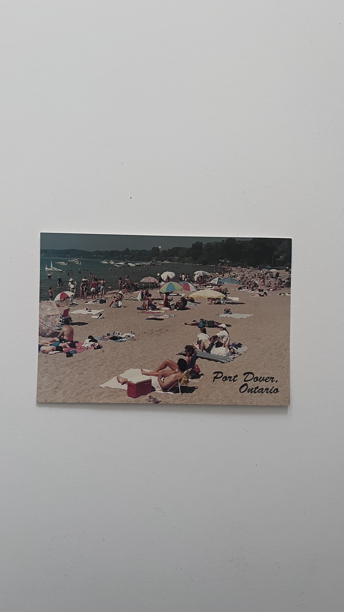

Port Dover 2025

Charly and I have always been beach-goers, and look forward to going to new beaches and parks every summer.
Last summer (2025), we visited Port Dover, Ontario, for the first time. It was roughly an hour drive through county roads on a sunny June day. We packed water, snacks, sandwiches and our beach supplies and spent the entire day in the water, tanning on the beach and reading books. I heard many great things about Port Dover and knew we had to check it out. The weather was absolutely perfect, and we were able to explore the small town, checking out boutiques, jewelry stores and a beachside restaurant where we enjoyed a large pitcher of beer as the sun set across the horizon.
Port Dover, though it is a small town, had a large beach for visitors and locals to enjoy and was one of the best beaches we have been to. We are looking forward to visiting again this summer, making sure to apply and reapply our sunscreen more times than I did on our last visit!
Beach days have been a tradition of Charlotte and mine for as long as we’ve known each other-- that is, almost eight years now!.
We’ve travelled to Barrie, Coburg, and Wasaga in the past. Last year, we went to a new beach in Port Dover, a town I had never heard of before. We swayed from our usual beach spots because we were living in Guelph last summer. We stayed here during the off-school season because we both started working a new job … at the same place!
In high school, we talked about how fun it would be if we worked together or even lived together, and in grade 11, we worked at a grocery store in our hometown. That was the worst job I have ever had. I stayed there for a couple of months while Charlotte continued. Fast forward four years, and we have been roommates for three years at this point. Bonus: We both immediately fell in love with our new job.
Summer 2025 will always be marked by my new job, new friends, new opportunities, and Port Dover. There is always something about beach trips that Charlotte and I chase after; it might be the temporary escape, the purposeful leisure, the good weather, or discovering new places -- maybe all of it. But each of our trips is always memorable, we always meet nice people and never rush through the drive, for it is our favourite part. There was nothing particularly fantastic about our trip to Port Dover, yet it will always be my favourite part of last summer. I hope that our beach days continue for the next eight years and more, and that we continue to turn our “what ifs” into realities.
Artifact Metadata
| Type | Description |
|---|---|
| Name | Port Dover Postcard |
| Collection | Ephemera > Postcards |
| Origin | A small consignment shop |
| Date | June 23, 2025 |
| Location | Port Dover, ON |
| Condition | Used |
| Description | An idealistic depiction of people layinng on blankets on the beach with "Port Dover, Ontario" inscribed on the bottom right corner. |
Port Dover, Ontario Beach Postcard
There is a very specific kind of humidity and smell—a mix of lake water and sunscreen—that this card brings back instantly. Unlike the polished, 'this is the life' energy of the Florida postcard, Port Dover feels more real and communal. I remember the feeling of the sand being just a bit too hot, the sound of a dozen different radios playing at once, and the way the lake always feels refreshing no matter how crowded the shore gets. I kept this one because it represents the local summer—the kind you can drive to on a whim. It’s a nice counterpoint to the more distant places in my archive; it reminds me that a change of scenery doesn't always require a passport, just a free Saturday and a towel. It feels like home in a way the other postcards don't.
Artifact Metadata
| Type | Description |
|---|---|
| Artifact ID | EP-ON-PD01 |
| Title | Port Dover, Ontario Beach Postcard |
| Category | Ephemera / Travel Documentation |
| Origin | Port Dover, Lake Erie, Ontario, Canada |
| Physical Description | A landscape-oriented postcard showing a crowded public beach at Port Dover. The scene is filled with beachgoers, colorful umbrellas (notably a yellow and white striped one in the center), and boats anchored in the shallow water. The text "Port Dover, Ontario" is printed in a black, cursive script in the bottom right corner. |
| Condition | Excellent. The card has a matte-like finish and sharp corners, appearing well-preserved without the sun-bleaching or wear typical of older souvenir cards. |